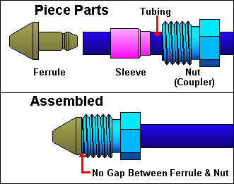

Adjusting Ultrasonics Transducer Voltage
This procedure describes how to adjust the ultrasonics transducer voltage on the reagent pipettor.
- Calibrated multimeter and test leads (refer to the approved test equipment document).
- Tool, wrench, 1/4-inch, open end or box end
- Torque wrench
- Tool, crowfoot, 1/4-inch
The purpose of this adjustment to the transducer voltage is to optimize the sonication at each power level.
The buffer supply line nut and conical ferrule must function as one or the system can experience ultrasonic failure codes, extreme heating, air bubbles, QC imprecision, or assay imprecision.
These procedures use voltage readings on the ultrasonics PCB and DAC counts from software adjustments to help determine when the buffer supply line nut is installed correctly.

Perform this procedure when troubleshooting transducer problems or replacing a part of the transducer circuit. This table helps determine which procedure to perform.
| If | then perform this procedure |
|---|---|
| checking or adjusting the transducer voltage | Adjustment |
| adjusting the pipettor transducer temperature | Adjustment |
| replacing a pipettor probe tip | Adjustment |
| installing a new instrument | Adjustment |
| replacing the pipettor buffer supply line | Baseline Calibration
Note: Refer to the
RP: Adjusting Ultrasonics Transducer Voltage Using Baseline Calibration procedure.
|
| replacing a transducer | Baseline Calibration
Note: Refer to the
RP: Adjusting Ultrasonics Transducer Voltage Using Baseline Calibration procedure.
|
| replacing a service loop cable | Adjustment |
| replacing an ultrasonics PCB | Adjustment |
- Confirm that the set-screw is not bent.
- Confirm that the slot in the transducer horn is aligned to the set-screw.
- When using the torque wrench and crowfoot, open the SPU to provide more working area.
- Have a spare reagent pipettor supply tubing in carstock in case the buffer supply line nut becomes rounded.
-
Prepare for the adjustment procedure.
-
Fully install the set-screw, and then back it out two turns.

-
Fully install the set-screw, and then back it out two turns.
-
Measure the voltage of the ultrasonics.